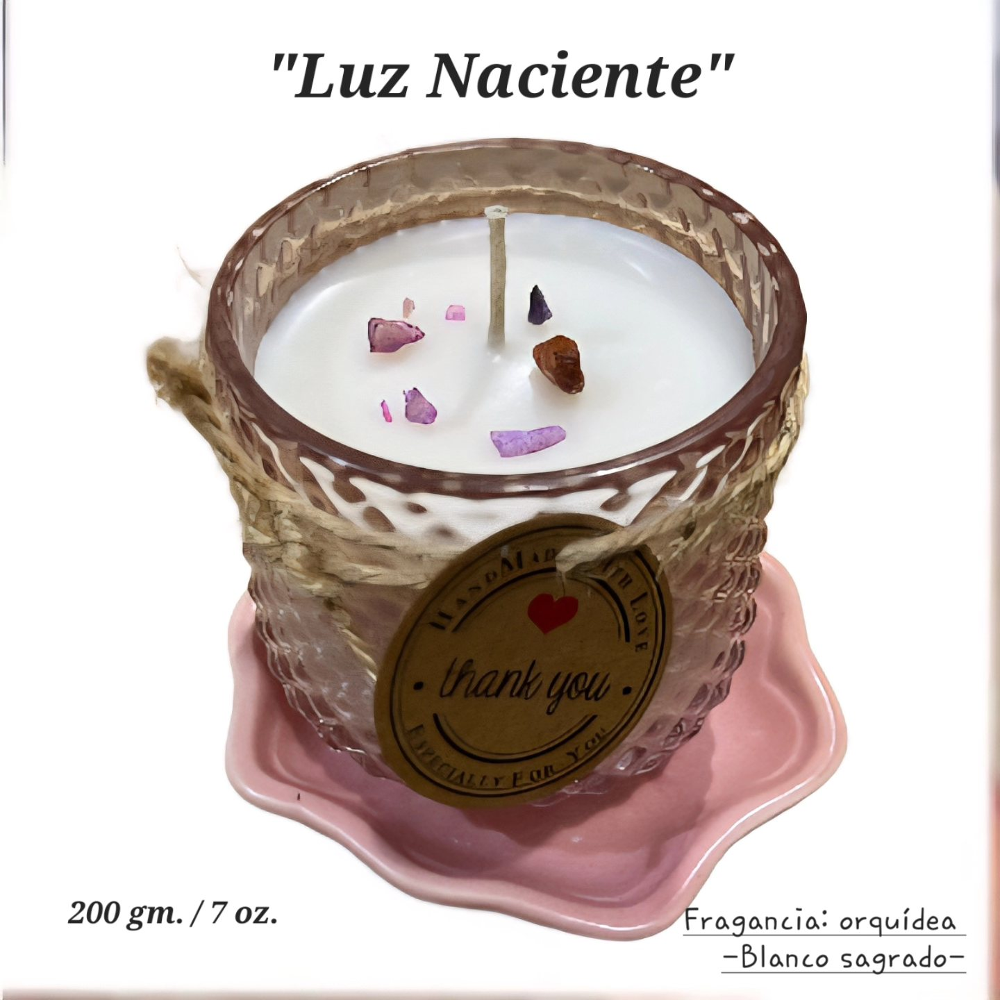
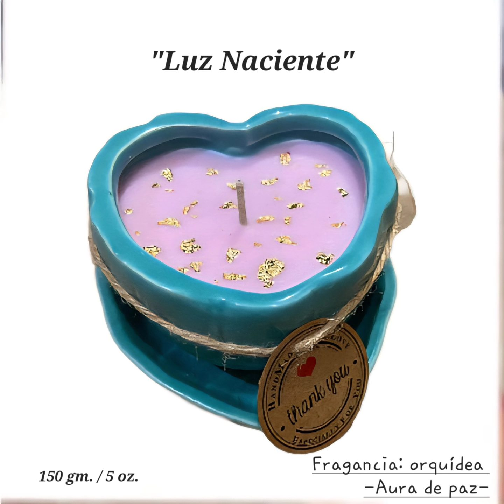
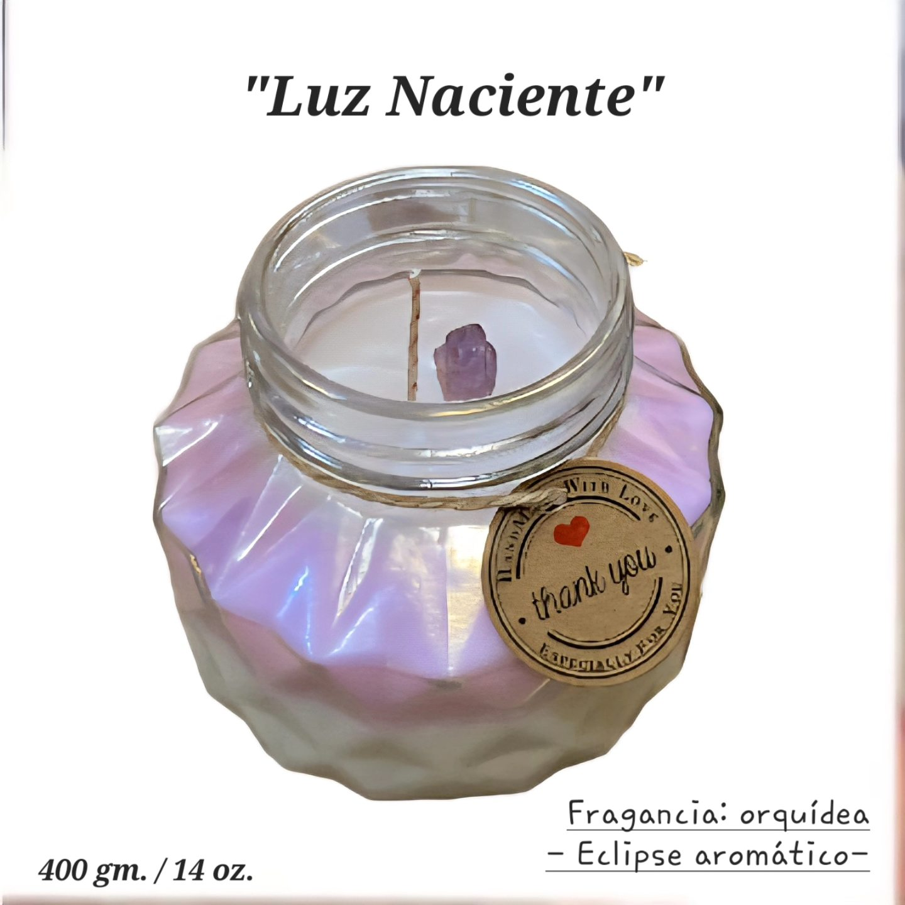
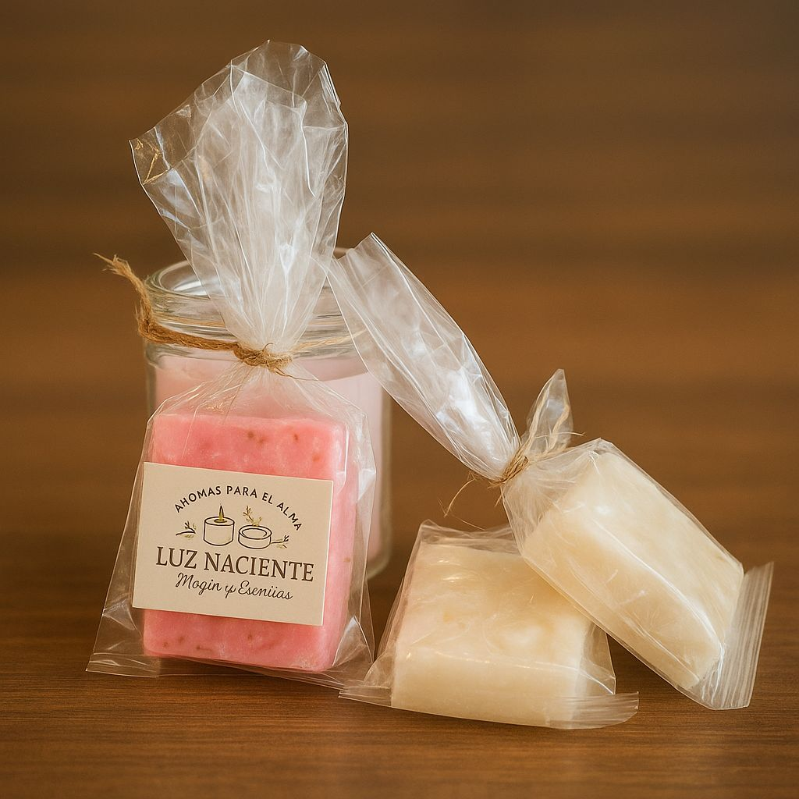

Velas, Jabones y Bienestar Artesanal ✨
Descubre el poder de lo artesanal. Jabones naturales, velas aromáticas y productos que transforman tus espacios y tus emociones. Elaborados con amor, naturaleza y tradición. 🌸
¡Compra Ahora!Somos Luz Naciente, un taller artesanal dedicado a crear productos que despiertan los sentidos y sanan el alma. Creemos en el poder de la naturaleza, el autocuidado y los pequeños rituales cotidianos que traen equilibrio y bienestar.
Jabón Carbón Activado - Limpieza profunda y natural. $80 MXN
Vela Blanca Luz Naciente - Paz y armonía. $250 MXN
Vela Aura de Paz - Aromaterapia relajante. $250 MXN
Vela Eclipse - Misterio y equilibrio. $250 MXN
Set de 3 Jabones Variados - Regalo perfecto. $200 MXN
¿Quieres aprender a hacer tus propios productos naturales? Aquí te compartimos recetas sencillas y seguras para elaborar jabones y velas en casa. Ideal para autocuidado o regalos llenos de intención.
Adquiere nuestros productos desde cualquier parte de México. Envía tu pedido por WhatsApp y realiza el pago por transferencia o depósito. 💌
Comprar por WhatsApp¿Tienes dudas, quieres personalizar un pedido o distribuir nuestros productos? ¡Escríbenos!
Email: contacto@luznaciente.com
WhatsApp: 81 2438 2947